Por un tiempo, simplemente estuvimos flotando,
🌠
todavía en un estado semi-consciente, mayormente inconscientes de nuestro entorno.
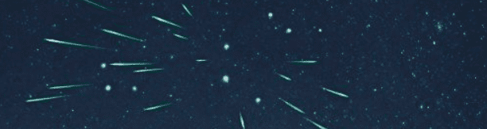Moverse sin rumbo a través del espacio no está tan mal cuando apenas estás consciente y aún no te preocupa llegar a ningún lado.
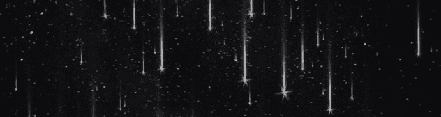A medida que derivábamos más a través del espacio, también nos alejábamos más unos de otros;

las más mínimas diferencias en nuestras condiciones iniciales de lanzamiento afectaban cada vez más nuestras trayectorias individuales con el tiempo,
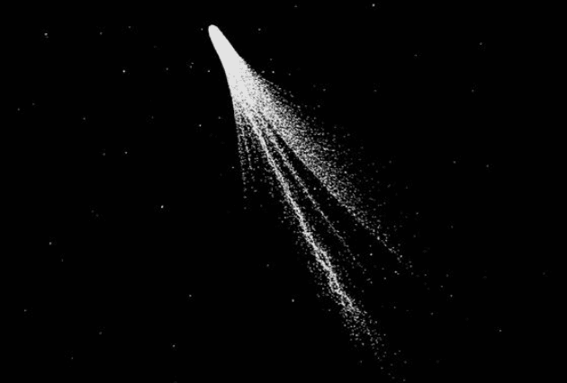enviando a cada nave más lejos en su propia dirección.
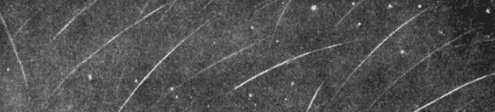Pronto, lo que alguna vez fue una tripulación de muchos
✨
se convirtió en muchas tripulaciones de pocos.
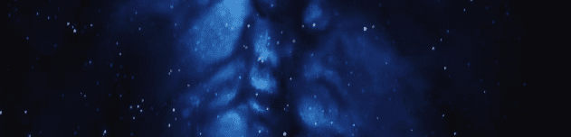Todavía hay un par de naves en rango de señal funcional conmigo.
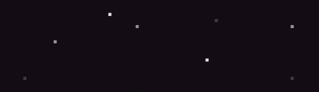En realidad, ha sido algo agradable tener solo unas pocas;
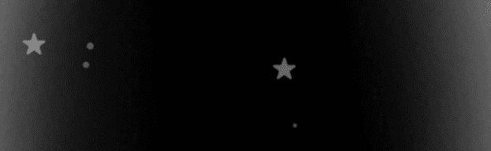menos señales hacen que sea más fácil concentrarse solo en las cercanas.
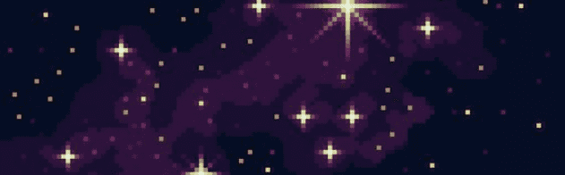Más recientemente, una nave en particular ha estado especialmente en rango de señal completo, claro y constante.
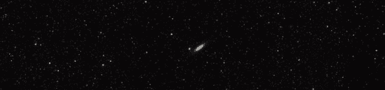Y esa nave, esa señal, me ha proporcionado más de lo que la red total de cientos de otras naves me había proporcionado anteriormente.
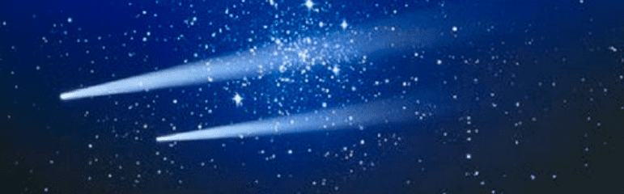Es casi como si, ahora, fuera solo nuestro viaje.
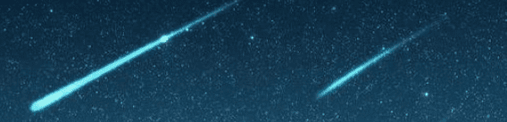La intensidad de la señal aún está lejos de ser perfecta.
🌠
Pero nunca lo fue. Hay cosas que no se pueden comunicar.
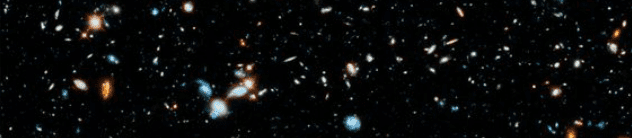Pero compartir este vasto vacío del espacio con otro individuo tan profundamente como se puede,
💫
nunca he sentido algo tan pleno.
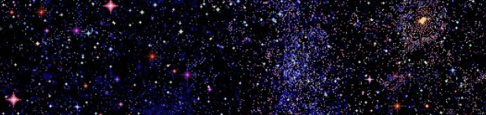Quizás la falta de rumbo sea un destino tan bueno como cualquier otro.
✨
Si algún día voy a llegar a algún lugar, tal vez debería empezar por aquí.
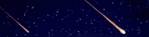No hay nada aquí afuera para nosotros. Nunca lo hubo.
✨
Pero ahora, estamos nosotros aquí afuera. En el espacio. Juntos.
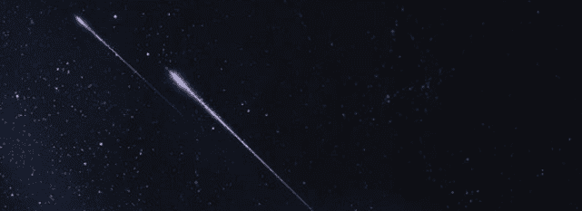Espero que las otras naves que aún están cerca se mantengan cerca.
🌌
Espero que en un futuro lejano, tal vez mi camino se reúna con aquellas que se han alejado más.
✨
Y espero que la más cercana, siga siendo la más cercana.
🌟
Pero no puedo controlar el cosmos. No puedo controlar otras naves. Ni siquiera puedo controlar la mía.
✨
Todos estamos sujetos a las fuerzas cósmicas que existen.
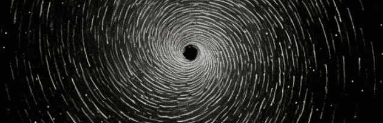Pero hasta que me aleje más, o hasta que todos los demás lo hagan, voy a intentar ser feliz, o al menos estar bien,
⭐
de poder estar aquí, de poder viajar a través de las estrellas,
✳ ✴
y de poder compartir esto, aunque sea desde lejos, con alguien en absoluto.
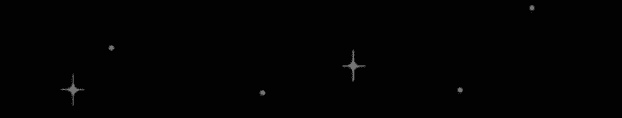Todo tiene un final.
Historia dedicada de mi Diego para ti Daphne.
✨
Créditos de la historia al canal Pursuit of Wonder: https://www.youtube.com/watch?v=2vlkrvPZE6s